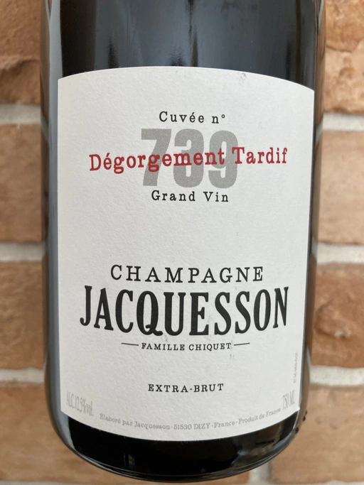

- Type
- White Sparkling, Extra brut
- Producer
- Jacquesson
- Vintage
- 2011
- Location
- France, Champagne AOC
- Grapes
- Pinot Meunier, Chardonnay, Pinot Noir
- Alcohol
- 12.5
- Sugar
- 0.75
- Price
- 2555 UAH
- Cellar
- N/A
2011 harvest from Aÿ, Dizy, Hautvillers (60%) and Avize, Oiry (40%), plus some reserve wines. 96 months on the lees, late disgorgement in June 2020. Dosage: 0.75g/l.
Ratings
2021-08-09 - 9.00
Expressive bouquet: oil, red baked apples with honey, toast. Despite all the power, it is quite elegant, with white flowers and some crème brûlée on the background. Well balanced, long and evolving aftertaste.
And now think about it, this wine spent 8 years on lees. I would love to taste regular 739 along with DT to compare the difference between ageing on lees and just in a bottle.